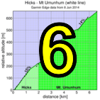

|
 |
 |
RSVP for today's climb after the previous week's climb!
| Check out the week 5 flyer (PDF)! |
| results? | right here! |
| profile |  |
| distance | 6.59 miles (10.6 km) |
| climbing | 2011 ft (612 meters) |
| grade | 5.79% |
| stats | first 7.0 km: 1462 ft climbing, 0 ft descending, 6.47% avg first 11.2 km: 1932 ft climbing, 56 ft descending, 5.11% avg final 2.5 km: 98 ft climbing, 65 ft descending, 0.08% avg |
| where? | see below |
| when? | 01 Nov 2014 |
| what time | check-in 9:00 to 10:00 climb starts @ 10:10 |
| RSVP | check back later! |
| waiver | Please fill one out before the climb! |
| how? | |
| how much? | $10 (free for juniors and those with volunteer credit) |
| why? | Ask not why; just do! |
| coordinator | |
| volunteers | sign up! |
| weather | Bay area winds |
| deja-vu? | New! |
Sorry, folks! Our insurance requires all riders wear helmets during the climb, and we follow the USA Cycling rule against ear buds or other head phones. Rock to tunes before the climb, perhaps, but we need riders to pay attention to what's happening during the climb...
We begin today's adventure at the intersection of Calaveras Road and Piedmont Road (Google Map). This is a mostly residential area, with some churches, but there should be no problem finding parking near the start.
Note today's climb is an individual time trial which means no drafting. This becomes especially important in the final 2.5 km, which is over rolling terrain. If you want to pass a rider ahead of you, please do so with authority, and if someone catches you from behind, you should allow them to pass cleanly: the responsibility for a safe, fair, and legal pass rests with both riders: this is the rule both in triathlon and in bike racing.
| modified Eddy Merckx "no aero bars or disk wheels" Rule: Since this is an open road and there's some rolling sections at the top, to encourage riders to have maximal control over their bikes Low-Key will have a "no aero bars, no disk wheels" rule for this week. 3:1 frame aspect rations? Spoke count limits? Socks above the mid-calf? No, we don't care about these things. We ask only that you leave the aero bars off. Flat-bar mountain bikes are fine. Deep carbon wheels are fine. Drop bars are of course fine. We just don't want you resting on your forearms and don't want your full disk wheels getting blown around in cross-winds. Thanks! |
Note RSVP this week will end Thursday night to give us time to prepare start times. Please sign up early!
Here's a Strava route from Fremont BART to the start. For Garmin navigation, attach your Garmin to your computer via USB which mounts it as a drive, export the route file to the Garmin Garmin/NewFiles folder (TCX format for Edge 500-510, GPX format for Edge 800-810), then unmount your Garmin and remove it. When you're ready to go, the route will be ready to use. On the Edge 500 go into Training menu, Routes sub-menu.
Volunteers make Low-Key tick! Without them, we no longer function. Please sign up for any week in the series using our volunteer form! Thanks!!!
Low-Key is all about a group of friends riding up a hill together. It's like any other informal group ride, except we time you to the top and report the results on our web site. But we have no road closures, no lead vehicle, no follow vehicle. We are traffic, sharing the roads with other traffic, following the laws and courtesy which applies to traffic. Think of it as a human-assisted Strava. We're each responsible for our own actions out there, on and off the bike, both as users of the road as as courteous visitors to the neighborhoods we pass through. "Ceci n'est pas un race".